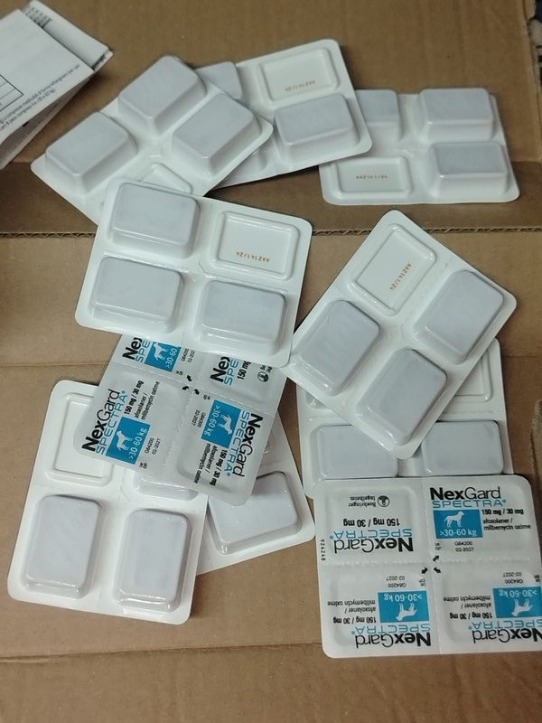
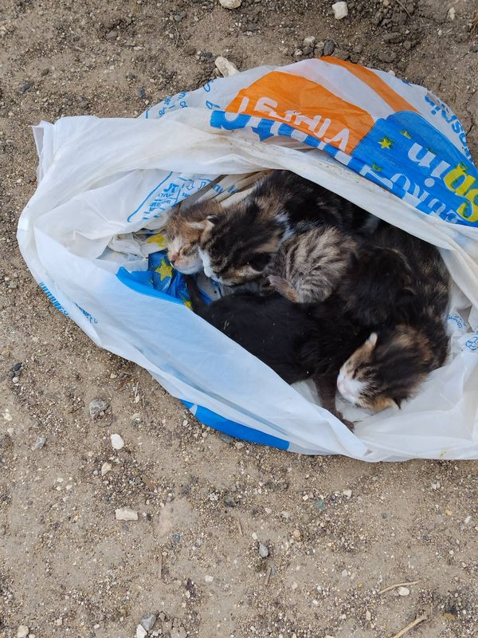
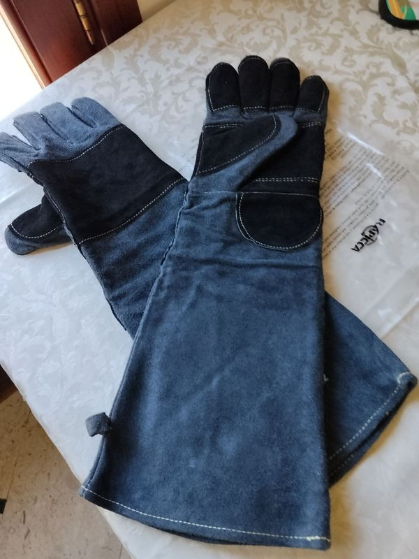
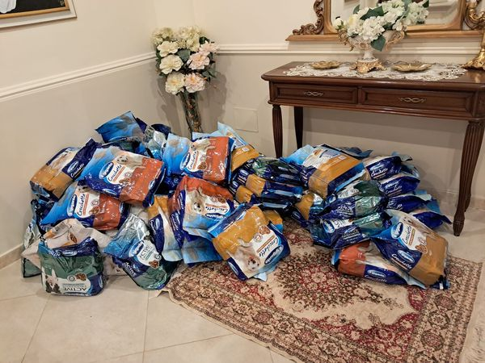
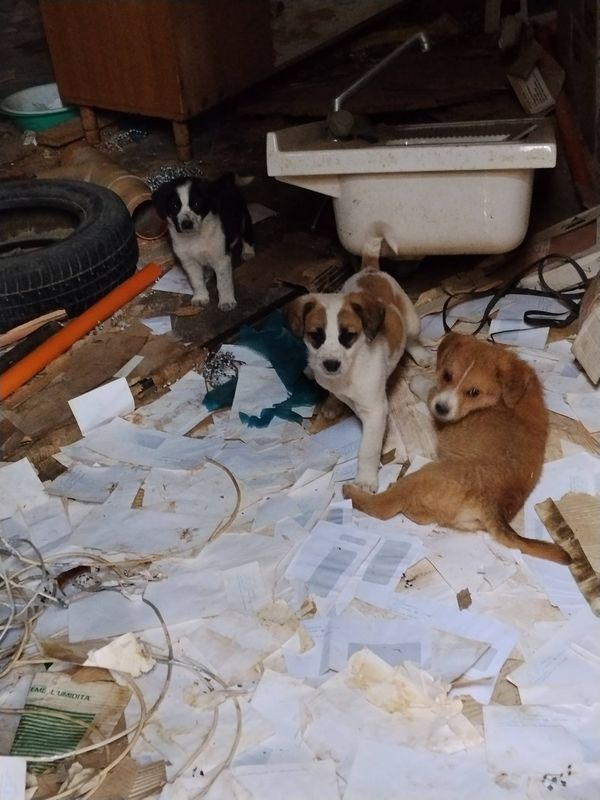
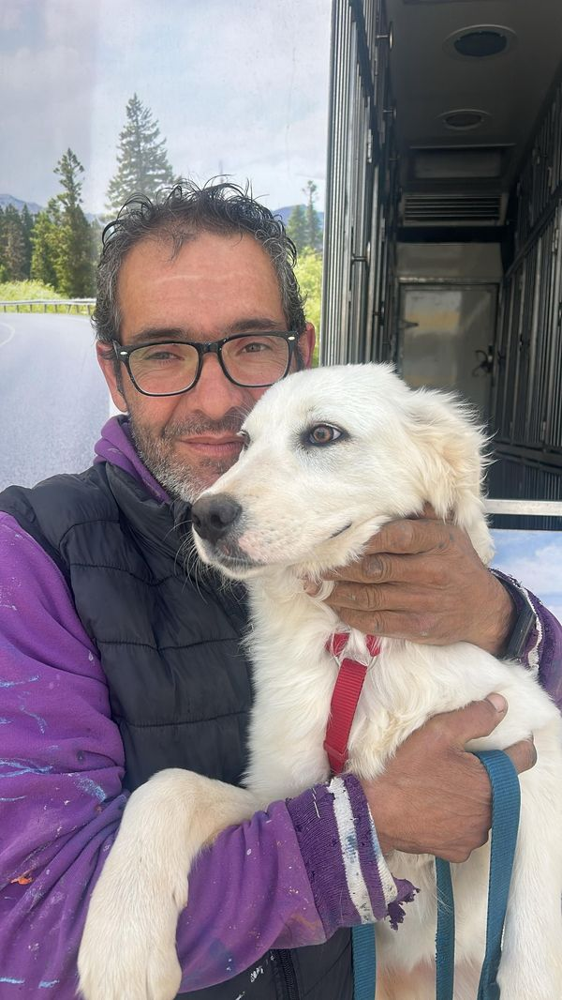

Devolvere il tuo 5×1000 ad Anima Mundi Sicilia non ti costa nulla, ma per un animale abbandonato può significare tutto.
Copia il codice e portalo dal tuo commercialista!
Il 5×1000 è una quota dell'IRPEF che lo Stato ripartisce tra gli enti del terzo settore. Non è una tassa in più e non sostituisce l'8×1000 o il 2×1000. Se non scegli a chi destinarlo, resterà allo Stato.
Nel riquadro "Sostegno degli Enti del Terzo Settore" della tua dichiarazione dei redditi (730, Redditi PF o Certificazione Unica).
Scrivi il Codice Fiscale di Anima Mundi Sicilia: 90028960814
Racconta ad amici e parenti quanto è facile aiutarci. Una firma in più può cambiare la vita di un animale.
💡 Anche chi non è tenuto a presentare la dichiarazione dei redditi può donare il 5×1000 usando l'apposita scheda fornita dal datore di lavoro o dall'INPS.
Ecco come il tuo contributo si trasforma in azioni concrete per gli animali del territorio.

Medicinali, antiparassitari e interventi per animali feriti o malati. Ogni cura restituisce una speranza.

Recuperiamo animali abbandonati in condizioni terribili, restituendo loro dignità e una possibilità di vita.

Guanti protettivi, trasportini, reti e tutto il necessario per operare in sicurezza durante i recuperi.

Tonnellate di crocchette e cibo umido per garantire pasti quotidiani ai randagi del territorio.

Campagne di sterilizzazione: l'unico modo efficace per ridurre il randagismo alla radice.

Ricerca di famiglie adottive tramite staffette autorizzate, garantendo un futuro sicuro a ogni animale.
Non dimenticare: destinare il 5×1000 non ti costa nulla. Ma per noi, e soprattutto per loro, vale tantissimo.
Se desideri contribuire anche con una donazione diretta:
IBAN: IT48G0303281910010001215410